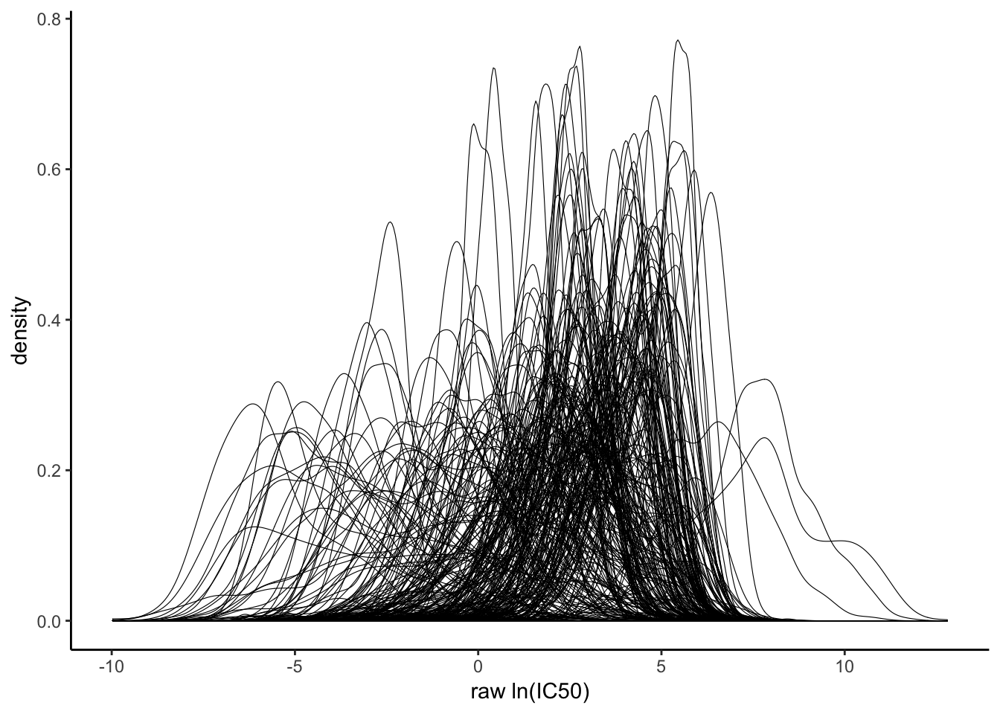

2 Compound library curation
To define a small set of compounds with both a high clinical relevance and a high potential to be active, we use previous pharmacogenomic screening data from Iorio et al.
2.1 Preprocess pharmacogenomic data
I download the openly available dataset generated by Iorio et al.
2.1.1 Import pharmacogenomic data
The data is stored in separate excel files containing fitted dose response data as well as details about the profiled cell lines.
Now I plot the distribution of ln(ic50)s for all drugs. As expected, distributions of transformed ic50 values are very heterogenous.

2.1.2 Center and scale data
Next, I center and scale the log-transformed ic50s to compare distributions. First, I plot the centered distributions.
For completeness, I also plot the centered and scaled ln(IC50) values.
2.1.3 Filter underutilized compounds
I wonder if there are compounds which were only seldom screened. I remove these drugs and work with the residual dataset.
I overwrite the original object after QC and save it.
2.2 Identify active compounds with pharmacogenomic data
2.2.1 Illustrate compound activity
I start out by gaining an overview of differential compound activities in the dataset. Therefore, I prepare a heatmap of transformed ic50 values for each compound and cell line pair.
Even after filtering rare compounds, I observe a considerable fraction of cell lines that have not been exposed to every drug.
Without dropping NAs the dimensions are:
| x |
|---|
| 1065 |
| 210 |
With dropping NAs the dimensions are:
| x |
|---|
| 296 |
| 210 |
Now I create a heatmap of compound sensitivities (with NAs removed).
Gastric and esophageal cancer cell lines do not seem to be highly related in terms of their compound sensitivity profiles. I continue my analysis by filtering for compounds with a strong selective activity for a subgroup of these GEA-related cancer cell lines.
2.2.2 Test selective compound activity
I am interested in compounds with a non-normal distribution of ic50 values. I base my further analysis on two assumptions.
* I assume, that compounds with normally distributed ln(ic50) have limited selective activity. On the other hand, treatments with exceptional activity in some cell lines will have skewed, non-normal distributions of ln(ic50) values.
* I assume that, similiarly to the clinical setting, an exceptional response is a rare event. Therfore, treatments with skewed distributions that point towards higher resistance are of limited interest.
To test for non-normality of ic50 distributions, I use a modified non-parametric kolmogorov smirnov test (lillie test). To remove compounds which have a skewed profile towards higher necessary doses, I estimate the orientation of the skewness and apply a filter.
First I apply my outlined approach to all available cell lines in the dataset. The resulting vulcano plot shows compounds with a non-normal distribution at the top of the plot and compounds with a skewness towards lower concentrations on the left side of the plot.
I now filter all stomach and oesophageal cancer cell lines. I base the following analysis on compound response data generated from ca. 60 cancer cell lines.
I now apply my outlined approach to the selected cell lines. Again, the resulting vulcano plot shows compounds with a non-normal distribution at the top of the plot and compounds with a skewness towards lower concentrations on the left side of the plot.

I can identify drugs with a high selective activity. As a sanity check, I plot selected distributions of the ln(ic50)s for active compounds in gastric and esophageal cancer cells.
The majority of selectively active compounds were also active from a pan-cancer perspective. Of all compounds tested by Iorio et al, about 60% of compounds were active in a pan-cancer setting according to my approach. This fraction seems conservative when considering the biased composition of the compound library used.

I prepare a shortlist of candidate compounds.
| drug_name | target | target_pathway | n |
|---|---|---|---|
| PD173074 | FGFR1, FGFR3 | RTK signaling | 53 |
| TL-2-105 | not defined | ERK MAPK signaling | 56 |
| Alectinib | ALK | RTK signaling | 56 |
| Quizartinib | FLT3 | RTK signaling | 56 |
| THZ-2-49 | CDK9 | Cell cycle | 56 |
| Tamoxifen | ESR1 | Hormone-related | 55 |
| Nutlin-3a (-) | MDM2 | p53 pathway | 54 |
| Cetuximab | EGFR | EGFR signaling | 51 |
| NSC-87877 | SHP-1 (PTPN6), SHP-2 (PTPN11) | Other | 47 |
| CP724714 | ERBB2 | EGFR signaling | 56 |
| Amuvatinib | KIT, PDGFRA, FLT3 | Other, kinases | 56 |
| Afatinib | ERBB2, EGFR | EGFR signaling | 53 |
| QL-XI-92 | DDR1 | Other | 56 |
| Tubastatin A | HDAC1, HDAC6, HDAC8 | Chromatin histone acetylation | 56 |
| Pelitinib | EGFR | EGFR signaling | 56 |
| PLX-4720 | BRAF | ERK MAPK signaling | 54 |
| CHIR-99021 | GSK3A, GSK3B | WNT signaling | 48 |
| rTRAIL | TRAIL receptor agonist | Apoptosis regulation | 53 |
| NSC-207895 | MDM4 | p53 pathway | 56 |
| PLX-4720 | BRAF | ERK MAPK signaling | 54 |
| WHI-P97 | JAK3 | Other, kinases | 56 |
| STF-62247 | Autophagy inducer | Other | 56 |
| IOX2 | EGLN1 | Other | 57 |
| T0901317 | LXR, FXR | Other | 56 |
| VX-702 | p38 | JNK and p38 signaling | 53 |
| GSK429286A | ROCK1, ROCK2 | Cytoskeleton | 56 |
| Selumetinib | MEK1, MEK2 | ERK MAPK signaling | 52 |
| Afatinib | ERBB2, EGFR | EGFR signaling | 53 |
| Navitoclax | BCL2, BCL-XL, BCL-W | Apoptosis regulation | 54 |
| Enzastaurin | PKCB | Other, kinases | 56 |
| SB590885 | BRAF | ERK MAPK signaling | 53 |
| Linsitinib | IGF1R | IGFR signaling | 46 |
| NPK76-II-72-1 | PLK3 | Cell cycle | 56 |
| Y-39983 | ROCK | Cytoskeleton | 56 |
There are compounds in this shortlist which have to be manually filtered for
2.2.3 Test correlation of active compounds
To reduce the redundancy in the dataset I measure the correlation of compound activity profiles across the whole dataset. Compounds with similiar profiles are grouped together.
Finally, I export a file with the selected compounds and check their clinical availibility.
2.3 Add compounds in clinical use
I went through current evidence based guidelines for the treatment of gastroesophageal adenocarcinoma and selected the following compounds for close evaluation.
| drug |
|---|
| Trastuzumab |
| Cisplatin |
| Oxaliplatin |
| Carboplatin |
| 5-Fluorouracil |
| Epirubicin |
| Docetaxel |
| Paclitaxel |
| SN-38 |
| Pembrolizumab |
2.3.1 Assess selective activity of clinical compounds
I wonder if these clincal compounds show some differential activity on a pan-cancer level. If this would not be the case, there would be only a weak rationale for keeping these compounds in the library.

Many compounds in the clinical compounds shortlist are highly related. We should discuss wether all of these compounds should stay in the final compound panel.